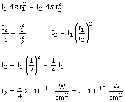
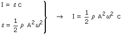
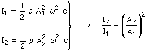
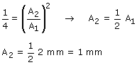

a)
Las unidades de la intensidad indican que se trata de una onda tridimensional
 |
Por las dos esferas pasa la misma energía por unidad de tiempo  |
Al duplicarse la distancia al foco la intensidad se hace cuatro veces menor.
b)
Relación entre intensidad y amplitud de oscilación:

Aplicando esta relación a las esferas 1 y 2:


Al duplicarse la distancia al foco la amplitud se reduce a la mitad (Amortiguamiento de la onda)